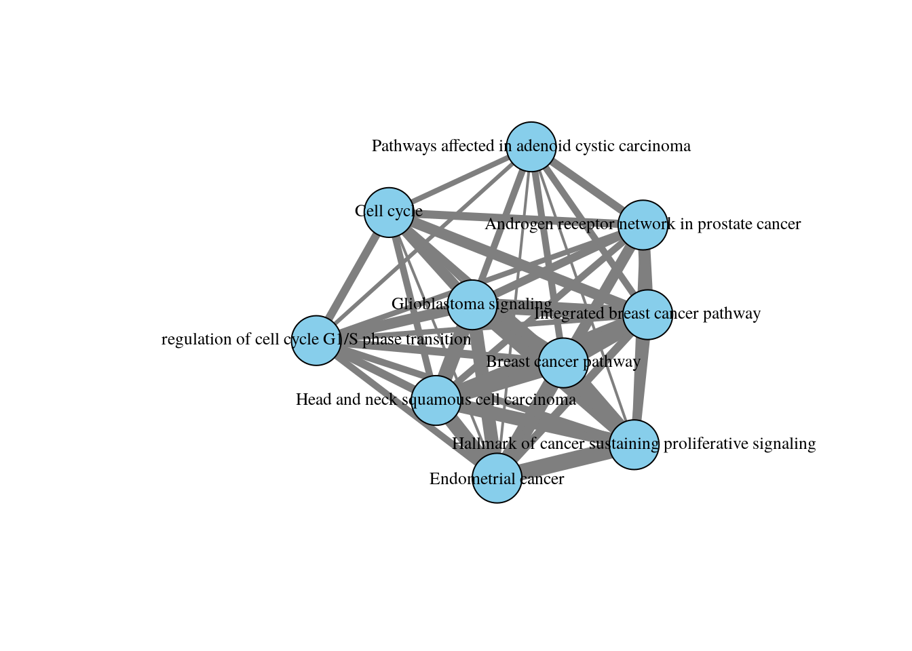

Module 2 lab - g:Profiler
This work is licensed under a Creative Commons Attribution-ShareAlike 3.0 Unported License. This means that you are able to copy, share and modify the work, as long as the result is distributed under the same license.
Authors: Veronique Voisin, Ruth Isserlin and Ali Chegini
Presenter: Veronique Voisin
Introduction
During this practical lab, we will perform pathway enrichment analysis using a defined gene list.
Goal of the exercise 1
For this exercise, our goal is to run pathway enrichment analysis using g:Profiler and explore the results. g:Profiler performs a gene-set enrichment analysis using a hypergeometric test (Fisher’s exact test). The Gene Ontology Biological Process, Reactome and WikiPathways sources are going to be used as pathway databases.
g:Profiler can be used using the website at https://biit.cs.ut.ee/gprofiler/gost. However, for this practical lab, we will run it from the g:Profiler R package.
We will run the query and explore the table of results and visualize the results as bar and dot plots.
One of the greatest features of g:Profiler is that it is updated on a regular basis and most of the previous versions are available online ont the gprofiler archive.
The gprofielr2 -g:Profiler R implementation is a wrapper for the web version. You require an internet connection to get enrichment results.
Data
g:Profiler requires a list of genes: for this, we use genes with frequent somatic SNVs identified in TCGA exome sequencing data of 3,200 tumors of 12 types. The MuSiC cancer driver mutation detection software was used to find 127 cancer driver genes that displayed higher than expected mutation frequencies in cancer samples (Supplementary Table 1, which is derived from column B of Supplementary Table 4 in Kandoth C. et al..
Exercise 1 - run g:Profiler
Before starting this exercise, download the required files:
Save the gene list (Pancancer_genelist.txt) on your local computer. Remember where you stored it as you need to know the path to the file to start the practical lab.
We recommend that you save it in your home directory in a folder called Module2 (./Module2) as it will be easier for you to follow the notebook.
Right click on link below and select “Save Link As…”.
We recommend saving all these files in a personal project data folder before starting. We also recommend creating an additional result data folder to save the files generated while performing the protocol.
Open RStudio and follow script instructions below.
Step 1 - Install and Load libraries
# CRAN and Bioconductor setup
if (!requireNamespace("BiocManager", quietly = TRUE))
install.packages("BiocManager")
# List of CRAN packages
cran_packages <- c(
"tidyverse",
"knitr",
"kableExtra",
"glue",
"RCurl",
"webshot2",
"ggridges",
"igraph",
"stringr",
"data.table"
)
# List of Bioconductor packages
bioc_packages <- c(
"gprofiler2",
"GSA",
"fgsea",
"clusterProfiler",
"enrichplot"
)
# Install CRAN packages if not already installed
for (pkg in cran_packages) {
if (!requireNamespace(pkg, quietly = TRUE)) {
install.packages(pkg)
}
}
# Install Bioconductor packages if not already installed
for (pkg in bioc_packages) {
if (!requireNamespace(pkg, quietly = TRUE)) {
BiocManager::install(pkg)
}
}
# Load the libraries
library(tidyverse)
library(knitr)
library(kableExtra)
library(glue)
library(RCurl)
library(webshot2)
library(ggridges)
library(igraph)
library(stringr)
library(data.table)
# Bioconductor packages
library(gprofiler2)
library(GSA)
library(fgsea)
library(clusterProfiler)
library(enrichplot)Step 2 - Input query
Find path on Windows: Using File Explorer Navigate to the file in File Explorer.
Right-click the file and select “Properties”.
In the General tab, look for:
Location: This shows the folder path.
File name: Combine this with the location to get the full path.
Example:
Location: C:\Users\Veronique\Documents
File name: example.txt
Full path:
C:\Users\Veronique\Documents\example.txt
Find path on a Mac: Using Finder with Right-Click Open Finder and locate the file.
Right-click (or Control-click) the file.
Hold the Option key — the menu item “Copy [filename] as Pathname” will appear.
Click it to copy the full file path.
Paste it anywhere (e.g., in a Terminal or text editor) :
/Users/veronique/Documents/example.txt
##The first step is to read the file containing the gene list.
# For this purpose, we need to know the path to the file = where we stored our file on our computer
# Please see my example below:
# myfile = "/Users/veronique/Documents/CO_summer_school/Pancancer_genelist.txt" ##!!REPLACE BY YOUR PATH!!##
myfile = "./Module2/gprofiler/data/Pancancer_genelist.txt"
##YOUR TURN: create the myfile object using the path to your file / name of the file ##
#This function will read the genelist file and import it as a data frame object in our R environment
current_genelist <- read.table( file = myfile,
header = FALSE,
sep = "\t", quote = "",
stringsAsFactors = FALSE)
#head(current_genelist)
#class(current_genelist)
#We take the gene list which is stored as the first column of our dataframe and convert it to a character vector for future use
query_set <- current_genelist$V1
#class(query_set)Step 3 - Run g:Profiler
The next step is to run pathway enrichment analysis using gost g:Profiler using the g:Profiler2 R package. For detailed descriptions of all the parameters that can be specified for the gost g:profiler function see the R package information - here and here.
For this query we are specifying -
- query - the set of genes of interest, as loaded in from the gene list file (
query_set). - significant - set to FALSE because we want g:Profiler to return all the results not just the ones that it deems significant by its predetermined threshold. We will filter the results for significance in a next step.
- ordered_query - set to FALSE (because we are not taking into account the order of the list)
- exclude_iea - set to TRUE. We are removing the electronic inferred annotations from the GO database
- correction_method - set to fdr. by default g:Profiler uses g:Scs
- organism - set to “hsapiens” for homo sapiens. Organism names are constructed by concatenating the first letter of the name and the family name (according to gprofiler2 documentation)
- source - the geneset source databases to use for the analysis. We recommend using GO biological process (GO:BP), WikiPathways (WP) and Reactome (Reac) but there are additional sources you can add (GO molecular function or cellular component(GO:MF, GO:CC), KEGG, transcription factors (TF), microRNA targets (MIRNA), corum complexes (CORUM), Human protein atlas (HPA),Human phenotype ontology (HP) )
gprofiler_results <- gost(query = query_set ,
significant=FALSE,
ordered_query = FALSE,
exclude_iea=TRUE,
correction_method = "fdr",
organism = "hsapiens",
source = c("REAC","WP","GO:BP"))#get the gprofiler results table
enrichment_results <- gprofiler_results$result
#display the names of all columns
colnames(enrichment_results)## [1] "query" "significant" "p_value"
## [4] "term_size" "query_size" "intersection_size"
## [7] "precision" "recall" "term_id"
## [10] "source" "term_name" "effective_domain_size"
## [13] "source_order" "parents"## query significant p_value term_size query_size intersection_size
## 1 query_1 TRUE 2.197504e-31 4820 117 99
## 2 query_1 TRUE 9.219198e-31 5210 117 101
## 3 query_1 TRUE 1.947743e-28 5688 117 102
## 4 query_1 TRUE 2.634097e-25 4388 117 89
## 5 query_1 TRUE 4.567813e-25 3542 117 81
## 6 query_1 TRUE 1.556961e-24 4278 117 87
## precision recall term_id source
## 1 0.8461538 0.02053942 GO:0080090 GO:BP
## 2 0.8632479 0.01938580 GO:0060255 GO:BP
## 3 0.8717949 0.01793249 GO:0019222 GO:BP
## 4 0.7606838 0.02028259 GO:0010556 GO:BP
## 5 0.6923077 0.02286844 GO:0019219 GO:BP
## 6 0.7435897 0.02033661 GO:0010468 GO:BP
## term_name
## 1 regulation of primary metabolic process
## 2 regulation of macromolecule metabolic process
## 3 regulation of metabolic process
## 4 regulation of macromolecule biosynthetic process
## 5 regulation of nucleobase-containing compound metabolic process
## 6 regulation of gene expression
## effective_domain_size source_order parents
## 1 16175 17800 GO:00192....
## 2 16175 14472 GO:00192....
## 3 16175 5599 GO:00081....
## 4 16175 4209 GO:00090....
## 5 16175 5596 GO:00061....
## 6 16175 4161 GO:00104....The enrichment_results dataframe contains different columns. Let’s rearrange the table to display the most important information. We will arrange the table so it contains: the database origin, the name of each of the pathway, term size , query size, intersection size and adjusted pvalue. -
- Term size: number of genes in the pathway as it is in the database
- Query size: number of genes in our gene list
- Intersection size: number of genes overlapping between our gene list and the tested pathway
- pvalue: adjusted pvalue (corrected for multiple hypothesis testing using the Benjamini-Hochberg method)
The results are ordered by significance, from the most significant pathway (lowest p-value) to the least significant.
enrichment_results$p_value <- formatC(enrichment_results$p_value, format = "e", digits = 2)
enrichment_results = enrichment_results[ , c("source", "term_name", "term_size", "query_size", "intersection_size", "p_value")]
kable(head(enrichment_results, n=20), caption = "Enrichment Result") %>%
kable_styling(bootstrap_options = c("striped", "condensed"), font_size = 10)| source | term_name | term_size | query_size | intersection_size | p_value |
|---|---|---|---|---|---|
| GO:BP | regulation of primary metabolic process | 4820 | 117 | 99 | 2.20e-31 |
| GO:BP | regulation of macromolecule metabolic process | 5210 | 117 | 101 | 9.22e-31 |
| GO:BP | regulation of metabolic process | 5688 | 117 | 102 | 1.95e-28 |
| GO:BP | regulation of macromolecule biosynthetic process | 4388 | 117 | 89 | 2.63e-25 |
| GO:BP | regulation of nucleobase-containing compound metabolic process | 3542 | 117 | 81 | 4.57e-25 |
| GO:BP | regulation of gene expression | 4278 | 117 | 87 | 1.56e-24 |
| GO:BP | regulation of biosynthetic process | 4519 | 117 | 89 | 1.56e-24 |
| GO:BP | positive regulation of macromolecule metabolic process | 2767 | 117 | 72 | 1.99e-24 |
| GO:BP | DNA-templated transcription | 3142 | 117 | 76 | 1.99e-24 |
| GO:BP | regulation of DNA-templated transcription | 3003 | 117 | 74 | 5.43e-24 |
| GO:BP | regulation of RNA biosynthetic process | 3022 | 117 | 74 | 7.44e-24 |
| GO:BP | positive regulation of cellular process | 4915 | 117 | 91 | 1.12e-23 |
| GO:BP | nucleic acid biosynthetic process | 3915 | 117 | 82 | 3.02e-23 |
| GO:BP | phosphorylation | 1132 | 117 | 48 | 6.35e-23 |
| GO:BP | regulation of RNA metabolic process | 3273 | 117 | 75 | 1.35e-22 |
| GO:BP | positive regulation of metabolic process | 3045 | 117 | 72 | 4.48e-22 |
| GO:BP | positive regulation of biological process | 5229 | 117 | 91 | 1.13e-21 |
| GO:BP | RNA biosynthetic process | 3822 | 117 | 79 | 1.39e-21 |
| GO:BP | nucleic acid metabolic process | 4503 | 117 | 85 | 1.39e-21 |
| GO:BP | protein phosphorylation | 1045 | 117 | 45 | 1.39e-21 |
Step 4 - Explore top table of results
For this analysis, we chose to use 3 databases: GO:BP, Reactome and Wikipathways. If we look at the top table only, we are only going to see the results of GO:BP but it is interesting to look at the top results for each of the 3 databunique(enrichment_results$source)
## [1] "GO:BP" "REAC" "WP"##Filter the dataframe to retrieve only the Reacome results
enrichment_results_Reac <- enrichment_results %>%
filter(source == "REAC")
##Now display the top 20 pathways
kable(head(enrichment_results_Reac, n=20), caption = "Enrichment Result") %>%
kable_styling(bootstrap_options = c("striped", "condensed"), font_size = 10)| source | term_name | term_size | query_size | intersection_size | p_value |
|---|---|---|---|---|---|
| REAC | Diseases of signal transduction by growth factor receptors and second messengers | 418 | 107 | 30 | 2.42e-15 |
| REAC | Disease | 1767 | 107 | 55 | 1.52e-14 |
| REAC | Gene expression (Transcription) | 1519 | 107 | 47 | 1.13e-11 |
| REAC | Generic Transcription Pathway | 1235 | 107 | 42 | 1.62e-11 |
| REAC | RNA Polymerase II Transcription | 1356 | 107 | 43 | 6.57e-11 |
| REAC | PI3K/AKT Signaling in Cancer | 92 | 107 | 13 | 7.33e-10 |
| REAC | Signal Transduction | 2548 | 107 | 57 | 2.46e-09 |
| REAC | ESR-mediated signaling | 216 | 107 | 17 | 3.59e-09 |
| REAC | Signaling by Nuclear Receptors | 290 | 107 | 19 | 4.83e-09 |
| REAC | Developmental Biology | 1225 | 107 | 37 | 1.27e-08 |
| REAC | PIP3 activates AKT signaling | 253 | 107 | 17 | 3.15e-08 |
| REAC | Cellular responses to stress | 792 | 107 | 28 | 1.21e-07 |
| REAC | Transcriptional regulation by RUNX3 | 95 | 107 | 11 | 1.47e-07 |
| REAC | Cellular responses to stimuli | 806 | 107 | 28 | 1.53e-07 |
| REAC | Negative regulation of the PI3K/AKT network | 99 | 107 | 11 | 2.00e-07 |
| REAC | Signaling by FLT3 ITD and TKD mutants | 15 | 107 | 6 | 2.04e-07 |
| REAC | Intracellular signaling by second messengers | 293 | 107 | 17 | 2.04e-07 |
| REAC | Formation of definitive endoderm | 15 | 107 | 6 | 2.04e-07 |
| REAC | Transcriptional Regulation by TP53 | 359 | 107 | 18 | 5.33e-07 |
| REAC | SUMO E3 ligases SUMOylate target proteins | 171 | 107 | 13 | 5.33e-07 |
Step 5 - Filter results by geneset size
Restrict the results to just the ones that have at maximum gene-set size of 1000 and a minimum gene-set size of 10 and with an adjusted pvalue of 0.05.-
- maximum gene-set size of 1000: will remove very generic pathway terms that are less informative like “regulation of gene expression”
- minimum gene-set size of 10: will remove small pathways where the pvalue is significant athough the overlap size is very small
- p_thres: aim is to retrieve only pathways that are significant under this adjusted pvalue threshold of 0.05 (5% false positive)
min_gs_size = 3
max_gs_size = 1000
p_thres = 0.05
# filer by params defined above
# by default we have set the max and min gs size to 250 and 3, respectively.
##the pvalue was stored as a character vector, we have to transform back into a numerical vector to be able to use it to filter values
enrichment_results$p_value <- as.numeric(enrichment_results$p_value)
enrichment_results_mxgssize_1000_min_10_adjp_0_05 <-
subset(enrichment_results,
term_size >= min_gs_size &
term_size <= max_gs_size &
p_value <= p_thres )
#
myrows = nrow(enrichment_results_mxgssize_1000_min_10_adjp_0_05)
print(glue("It results in {myrows} selected pathways with maximum gene-set size of {max_gs_size} and minimum gene-set of {min_gs_size} with an adjusted p-value of {p_thres} . "))## It results in 2080 selected pathways with maximum gene-set size of 1000 and minimum gene-set of 3 with an adjusted p-value of 0.05 .In a second step, try different thresholds of maximum gene-set size and adjusted pvalue threshold: 500 and 250 for * max_gs_size and 0.01 or 0.001 for pvalue-
- Option 1
- max_gs_size = 500
- p_thres = 0.01
or
- Option 2
- max_gs_size = 250
- p_thres = 0.001
Step 6 - Run g:profiler with your own genesets (example using BaderLab genesets)
With regards to pathway sets there are two options when using g:Profiler -
- Use the genesets that are supplied by g:Profiler as we just did.
- Upload your own genesets.
The most common reasons for supplying your own genesets is the ability to use up to date annotations or in-house annotations that might not be available in the public sphere yet. It can be used to test the enrichment in a particular pathway of interest that might not be in the general pathway database but that you obtained for example by extracting the data from a published paper. You need to format this pathway in a .gmt file.
In this example, we will upload the Baderlab gene set file that contains multiple database sources. We will filter the gene-set prior to uploading the gene-set file to g:Profiler.
Step 7 - Download and load Bader lab geneset file
Download the latest Bader lab genesets The file will be downloaded on your local computer in the workin directory (working_dir) of your choice.
dest_gmt_file = ""
#flag to trigger download of latest gmt file - change to TRUE
# if you want to check the website and download the latest
# version instead of using the specified May 01, 2025 version.
downlaod_latest_version = FALSE
#working_dir = "/Users/veronique/Documents/CO_summer_school"
working_dir = file.path(getwd(),"Module2")
## YOUR TURN: replace working directory by your own path to your working directory ##
if((dest_gmt_file == "") && downlaod_latest_version){
gmt_url = "http://download.baderlab.org/EM_Genesets/current_release/Human/symbol/"
#list all the files on the server
filenames = RCurl::getURL(gmt_url)
tc = textConnection(filenames)
contents = readLines(tc)
close(tc)
#get the gmt that has all the pathways and does not include
# terms inferred from electronic annotations(IEA)
#start with gmt file that has pathways only
rx = gregexpr("(?<=<a href=\")(.*.GOBP_AllPathways_noPFOCR_no_GO_iea.*.)(.gmt)(?=\">)",
contents, perl = TRUE)
gmt_file = unlist(regmatches(contents, rx))
dest_gmt_file <- file.path(working_dir,gmt_file)
if(!file.exists(dest_gmt_file)){
download.file(
paste(gmt_url,gmt_file,sep=""),
destfile=dest_gmt_file
)
}
} else if(!downlaod_latest_version){
gmt_url = "http://download.baderlab.org/EM_Genesets/May_01_2025/Human/symbol/"
gmt_file = "Human_GOBP_AllPathways_noPFOCR_no_GO_iea_May_01_2025_symbol.gmt"
#download the specific file specified above
dest_gmt_file <- file.path(working_dir,gmt_file)
if(!file.exists(dest_gmt_file)){
download.file(
paste(gmt_url,gmt_file,sep=""),
destfile=dest_gmt_file
)
}
}Load in the GMT file
This step will take the gmt file that we just downloaded on our computers and upload them into our R environment in the GSA.genesets object called “genesets_baderlab_genesets”. The capture.output() function is only there to redirect the printed messages for a clearer notebook.
Step 8 - Filter Bader lab geneset file
The g:Profiler interface only allows for filtering genesets by size only after the analysis is complete. After the analysis is complete means the filtering is happening after Multiple hypothesis testing. Filtering prior to the analysis will generate more robust results because we exclude the uninformative large genesets prior to testing changing the sets that multiple hypothesis filtering will get rid of.
Create multiple gmt files with different filtering thresholds - remove * genesets greater than 250 genes * geneset greater than 1000 genes * geneset greater than 10000 genes
# Filter geneset GSA object by specified gs size threshold
#
# Given -
# genesets - in GSA object
# gs_sizes - list of all the sizes of the genesets found in the genesets
# filter_threshold - value to filter the geneset by.
#
#This function will return a filtered GSA object. We first create the function.
# The function returns a filtered genesets in a GSA object
filter_genesets <- function(genesets, gs_sizes, filter_threshold) {
filtered_genesets <- genesets
filtered_genesets$genesets <- genesets$genesets[
which(gs_sizes<filter_threshold)]
filtered_genesets$geneset.names <- genesets$geneset.names[
which(gs_sizes<filter_threshold)]
filtered_genesets$geneset.descriptions <- genesets$geneset.descriptions[
which(gs_sizes<filter_threshold)]
return(filtered_genesets)
}
# You can not simply write a list of lists to a file in R. In order
# to output the new geneset file you need to convert it ot a data.frame
# To do this convert the list of genes to a tab delmiated list in one column
# of the dataframe.
# format to write out to a file.
#
# Given -
# genesets - in GSA object
# This function returns the formatted genesets as data frame
format_genesets <- function(genesets) {
collapsed_genesets <- data.frame(name=genesets$geneset.names,
description= genesets$geneset.description)
collapsed_genesets$genes <- unlist(lapply(genesets$genesets,
FUN=function(x){
paste(x,collapse = "\t")
}))
return(collapsed_genesets)
}The format of the GMT file is described https://software.broadinstitute.org/cancer/software/gsea/wiki/index.php/Data_formats#GMT:Gene_Matrix_Transposed_file_format.28.2A.gmt.29 and consists of rows with the following
- Name
- Description
- tab delimited list of genes a part of this geneset
Write out the gmt file with genenames
#get the geneset sizes
gs_sizes_baderlab_sets <- lapply(genesets_baderlab_genesets$genesets,
FUN = function(x){
length(x)
})
# max 10,000
genesets_baderlab_genesets_max10000 <- filter_genesets(genesets_baderlab_genesets,
gs_sizes_baderlab_sets,
10000)
genesets_baderlab_genesets_max10000_filename <- gsub(x =dest_gmt_file,
pattern = "symbol" ,
replacement = "symbol_max10000"
)
if(!file.exists(genesets_baderlab_genesets_max10000_filename)){
write.table(x = format_genesets(genesets_baderlab_genesets_max10000),
file = genesets_baderlab_genesets_max10000_filename,
quote = FALSE,sep = "\t",row.names = FALSE,
col.names=TRUE)
}
#max gs size of 1,000
genesets_baderlab_genesets_max1000 <- filter_genesets(genesets_baderlab_genesets,
gs_sizes_baderlab_sets,
1000)
genesets_baderlab_genesets_max1000_filename <- gsub(x =dest_gmt_file,
pattern = "symbol" ,
replacement = "symbol_max1000"
)
if(!file.exists(genesets_baderlab_genesets_max1000_filename)){
write.table(x = format_genesets(genesets_baderlab_genesets_max1000),
file = genesets_baderlab_genesets_max1000_filename,
quote = FALSE,sep = "\t",row.names = FALSE,
col.names=TRUE)
}
#max gs size of 250
genesets_baderlab_genesets_max250 <- filter_genesets(genesets_baderlab_genesets,
gs_sizes_baderlab_sets,
250)
genesets_baderlab_genesets_max250_filename <- gsub(x =dest_gmt_file,
pattern = "symbol" ,
replacement = "symbol_max250"
)
if(!file.exists(genesets_baderlab_genesets_max250_filename)){
write.table(x = format_genesets(genesets_baderlab_genesets_max250),
file = genesets_baderlab_genesets_max250_filename,
quote = FALSE,sep = "\t",row.names = FALSE,
col.names=TRUE)
}Step 9 - Upload the gmt files to gprofiler and rerun g:Profiler
In order to use your own genesets with g:Profiler you need to upload the the file to g:Profiler server first. The function will return an ID that you need to specify in the organism parameter of the g:Profiler gost function call. It is done by using the upload_GMT_file() function which is included in the gprofiler2 package. Note: it took about 2 minutes to run this chunck of code.
## Your custom annotations ID is gp__4ikE_Ep2T_hDA.
## You can use this ID as an 'organism' name in all the related enrichment tests against this custom source.## Just use: gost(my_genes, organism = 'gp__4ikE_Ep2T_hDA')## Your custom annotations ID is gp__7pXw_Z6X8_F4Y.
## You can use this ID as an 'organism' name in all the related enrichment tests against this custom source.## Just use: gost(my_genes, organism = 'gp__7pXw_Z6X8_F4Y')## Your custom annotations ID is gp__wSjn_ZSNm_37E.
## You can use this ID as an 'organism' name in all the related enrichment tests against this custom source.## Just use: gost(my_genes, organism = 'gp__wSjn_ZSNm_37E')For this query we are specifying -
- query - the set of genes of interest, as loaded in from the gene set file.
- significant - set to FALSE because we want g:Profiler to return all the results not just the ones that it deems significant by its perdetermined threshold.
- ordered_query - set to FALSE (but you can try setting it to true as well because for this set of genes they are ordered in order of their significance)
- correction_method - set to fdr. by default g:Profiler uses g:Scs
- organism - set to the custom_gmt ID ( for this run it is - custom_gmt_max250) that we received when we uploaded our genetset file.
gprofiler_results_custom_max250 <- gost(query = query_set ,
significant=TRUE,
ordered_query = FALSE,
exclude_iea=TRUE,
correction_method = "fdr",
organism = custom_gmt_max250
)## Detected custom GMT source requestgprofiler_results_custom_max1000 <- gost(query = query_set ,
significant=TRUE,
ordered_query = FALSE,
exclude_iea=TRUE,
correction_method = "fdr",
organism = custom_gmt_max1000
)## Detected custom GMT source requestgprofiler_results_custom_max10000 <- gost(query = query_set ,
significant=TRUE,
ordered_query = FALSE,
exclude_iea=TRUE,
correction_method = "fdr",
organism = custom_gmt_max10000
)## Detected custom GMT source request #get the gprofiler results table
enrichment_results_customgmt_max250 <- gprofiler_results_custom_max250$result
enrichment_results_customgmt_max1000 <- gprofiler_results_custom_max1000$result
enrichment_results_customgmt_max10000 <- gprofiler_results_custom_max10000$result
enrichment_results_customgmt_max250[1:5,]## query significant p_value term_size query_size intersection_size
## 1 query_1 TRUE 6.957366e-21 71 108 18
## 2 query_1 TRUE 3.993837e-20 65 108 17
## 3 query_1 TRUE 2.921653e-16 54 108 14
## 4 query_1 TRUE 1.861155e-15 99 108 16
## 5 query_1 TRUE 7.455524e-15 133 108 17
## precision recall
## 1 0.1666667 0.2535211
## 2 0.1574074 0.2615385
## 3 0.1296296 0.2592593
## 4 0.1481481 0.1616162
## 5 0.1574074 0.1278195
## term_id
## 1 GLIOBLASTOMA SIGNALING%WIKIPATHWAYS_20250410%WP2261%HOMO SAPIENS
## 2 HEAD AND NECK SQUAMOUS CELL CARCINOMA%WIKIPATHWAYS_20250410%WP4674%HOMO SAPIENS
## 3 PATHWAYS AFFECTED IN ADENOID CYSTIC CARCINOMA%WIKIPATHWAYS_20250410%WP3651%HOMO SAPIENS
## 4 CELL CYCLE%WIKIPATHWAYS_20250410%WP179%HOMO SAPIENS
## 5 INTEGRATED BREAST CANCER PATHWAY%WIKIPATHWAYS_20250410%WP1984%HOMO SAPIENS
## source
## 1 Human_GOBP_AllPathways_noPFOCR_no_GO_iea_May_01_2025_symbol_max250
## 2 Human_GOBP_AllPathways_noPFOCR_no_GO_iea_May_01_2025_symbol_max250
## 3 Human_GOBP_AllPathways_noPFOCR_no_GO_iea_May_01_2025_symbol_max250
## 4 Human_GOBP_AllPathways_noPFOCR_no_GO_iea_May_01_2025_symbol_max250
## 5 Human_GOBP_AllPathways_noPFOCR_no_GO_iea_May_01_2025_symbol_max250
## term_name effective_domain_size
## 1 Glioblastoma signaling 16997
## 2 Head and neck squamous cell carcinoma 16997
## 3 Pathways affected in adenoid cystic carcinoma 16997
## 4 Cell cycle 16997
## 5 Integrated breast cancer pathway 16997
## source_order parents
## 1 5826
## 2 5060
## 3 5126
## 4 5076
## 5 5610Filter the table to include just the columns that are required for the generic enrichment map file results GEM. Restrict the results to just the ones that have at least min_gs_size and less than max_gs_size terms and min_intersection size include only the term_id, term_name, p_value (and p_value again because the p_value is actually the corrected p-value. The output file does not contain the nominal p_value. For down stream analysis though it is expected to have both a p-value and a q-value so just duplicate the q-value as both p-value and q-value)
# filer by params defined above
enrichment_results_customgmt_max250$p_value <- formatC(enrichment_results_customgmt_max250$p_value, format = "e", digits = 2)
enrichment_results_customgmt_max250 = enrichment_results_customgmt_max250[ order(enrichment_results_customgmt_max250$p_value), c("term_id", "term_name", "term_size", "query_size", "intersection_size", "p_value")]
kable(head(enrichment_results_customgmt_max250, n=20), caption = "Enrichment Result") %>%
kable_styling(bootstrap_options = c("striped", "condensed"), font_size = 10)| term_id | term_name | term_size | query_size | intersection_size | p_value | |
|---|---|---|---|---|---|---|
| 1078 | SUMOYLATION OF TRANSCRIPTION COFACTORS%REACTOME%R-HSA-3899300.7 | SUMOylation of transcription cofactors | 42 | 108 | 3 | 1.00e-02 |
| 1079 | PID_FOXO_PATHWAY%MSIGDB_C2%PID_FOXO_PATHWAY | PID_FOXO_PATHWAY | 42 | 108 | 3 | 1.00e-02 |
| 1080 | IL26 SIGNALING%WIKIPATHWAYS_20250410%WP5347%HOMO SAPIENS | IL26 signaling | 42 | 108 | 3 | 1.00e-02 |
| 1081 | GASTRULATION%GOBP%GO:0007369 | gastrulation | 88 | 108 | 4 | 1.00e-02 |
| 1082 | SYNAPTIC SIGNALING ASSOCIATED WITH AUTISM SPECTRUM DISORDER%WIKIPATHWAYS_20250410%WP4539%HOMO SAPIENS | Synaptic signaling associated with autism spectrum disorder | 42 | 108 | 3 | 1.00e-02 |
| 1083 | CENTRAL NERVOUS SYSTEM NEURON DEVELOPMENT%GOBP%GO:0021954 | central nervous system neuron development | 42 | 108 | 3 | 1.00e-02 |
| 1084 | NEGATIVE REGULATION OF PROTEIN DEPOLYMERIZATION%GOBP%GO:1901880 | negative regulation of protein depolymerization | 42 | 108 | 3 | 1.00e-02 |
| 1085 | MACROPHAGE STIMULATING PROTEIN MSP SIGNALING%WIKIPATHWAYS_20250410%WP5353%HOMO SAPIENS | Macrophage stimulating protein MSP signaling | 88 | 108 | 4 | 1.00e-02 |
| 163 | RETINOBLASTOMA GENE IN CANCER%WIKIPATHWAYS_20250410%WP2446%HOMO SAPIENS | Retinoblastoma gene in cancer | 72 | 108 | 7 | 1.00e-05 |
| 164 | WNT BETA CATENIN SIGNALING IN LEUKEMIA%WIKIPATHWAYS_20250410%WP3658%HOMO SAPIENS | Wnt beta catenin signaling in leukemia | 24 | 108 | 5 | 1.00e-05 |
| 165 | BIOCARTA_RACCYCD_PATHWAY%MSIGDB_C2%BIOCARTA_RACCYCD_PATHWAY | BIOCARTA_RACCYCD_PATHWAY | 24 | 108 | 5 | 1.00e-05 |
| 166 | TRANSCRIPTIONAL REGULATION BY RUNX1%REACTOME DATABASE ID RELEASE 92%8878171 | Transcriptional regulation by RUNX1 | 190 | 108 | 10 | 1.00e-05 |
| 514 | MYELOID CELL DIFFERENTIATION%GOBP%GO:0030099 | myeloid cell differentiation | 172 | 108 | 7 | 1.01e-03 |
| 515 | KIDNEY MORPHOGENESIS%GOBP%GO:0060993 | kidney morphogenesis | 40 | 108 | 4 | 1.02e-03 |
| 516 | NEGATIVE REGULATION OF CELL PROLIFERATION INVOLVED IN HEART MORPHOGENESIS%GOBP%GO:2000137 | negative regulation of cell proliferation involved in heart morphogenesis | 3 | 108 | 2 | 1.02e-03 |
| 517 | PROSTATE GLAND EPITHELIUM MORPHOGENESIS%GOBP%GO:0060740 | prostate gland epithelium morphogenesis | 3 | 108 | 2 | 1.02e-03 |
| 518 | LOSS OF FUNCTION OF SMAD4 IN CANCER%REACTOME DATABASE ID RELEASE 92%3304347 | Loss of Function of SMAD4 in Cancer | 3 | 108 | 2 | 1.02e-03 |
| 519 | PRESYNAPTIC PHASE OF HOMOLOGOUS DNA PAIRING AND STRAND EXCHANGE%REACTOME%R-HSA-5693616.6 | Presynaptic phase of homologous DNA pairing and strand exchange | 40 | 108 | 4 | 1.02e-03 |
| 520 | NEGATIVE REGULATION OF MAMMARY GLAND EPITHELIAL CELL PROLIFERATION%GOBP%GO:0033600 | negative regulation of mammary gland epithelial cell proliferation | 3 | 108 | 2 | 1.02e-03 |
| 521 | REGULATION OF CELL PROLIFERATION INVOLVED IN HEART VALVE MORPHOGENESIS%GOBP%GO:0003250 | regulation of cell proliferation involved in heart valve morphogenesis | 3 | 108 | 2 | 1.02e-03 |
Exercise 2 - visualization
We will use clusterProfiler style visualization. ### Step 1 - Bar plot
##Calculate a score
enrichment_results_customgmt_max250$score = -log10(as.numeric(enrichment_results_customgmt_max250$p_value))
enrichmentTidy <- enrichment_results_customgmt_max250 %>%
as_tibble() %>%
arrange(desc(score)) %>%
slice_head(n = 20)
p = ggplot(enrichmentTidy, aes(reorder(term_name, score), score)) +
geom_col(aes(fill = score), width=0.8) +
scale_fill_gradient(low = "#C1F6F8", high = "#00BFC4")+
coord_flip() +
labs(x="", y="Normalized Enrichment Score",
title="Pathway enrichment analysis ") +
theme_minimal()
pStep 2 - Dot plot with segment
enrichmentTop20 <- enrichmentTidy %>%
arrange(desc(score)) %>%
slice_head(n = 20)
p = ggplot(enrichmentTop20, aes(
y = fct_reorder(term_name, score),
x = score,
color = score,
size = score
)) +
geom_point() +
scale_color_gradientn(
colours = c("#56A443", "#8AA443", "#f7ca64"),
trans = "log10",
guide = guide_colorbar(reverse = FALSE, order = 1)
) +
scale_size_continuous(range = c(4, 8)) +
theme_bw(base_size = 12) +
xlab("score -log10(adj pvalue)") +
ylab(NULL) +
ggtitle("Pathway Enrichment Analysis") +
theme(
axis.text.y = element_text(size = 10)
)
pStep 3 - Ridge plot
enrichmentTop20 <- enrichmentTidy %>%
arrange(desc(score)) %>%
slice_head(n = 20)
# Expand each term to have multiple x values
ridge_data <- enrichmentTop20 %>%
rowwise() %>%
mutate(x_vals = list(seq(-1, 1, length.out = 100))) %>%
unnest(x_vals)
p = ggplot(ridge_data, aes(
x = x_vals,
y = fct_reorder(term_name, score),
height = score,
group = term_name,
fill = score
)) +
geom_density_ridges(
stat = "identity",
scale = 0.9,
rel_min_height = 0.01,
color = "white",
alpha = 0.9
) +
scale_fill_gradientn(
colours = c("#E6194B", "#3CB44B", "#4363D8"),
trans = "log10",
guide = guide_colorbar(title = "-log10(p-value)")
) +
theme_ridges(font_size = 12, grid = TRUE) +
xlim(-1.2, 1.2) +
xlab("") +
ylab(NULL) +
ggtitle("Pathway enrichment analysis")
p = p + theme_minimal(base_size = 12)
pStep 4 - Network visualization - EnrichmentMap
Get names of genes in the overlap for each pathway
gprofiler_results_custom_max250 <- gost(query = query_set ,
significant=TRUE,
ordered_query = FALSE,
exclude_iea=TRUE,
correction_method = "fdr",
organism = custom_gmt_max250
)
subset_genesets <- genesets_baderlab_genesets$genesets[which(genesets_baderlab_genesets$geneset.names %in% gprofiler_results_custom_max250$result$term_id)]
genes <- lapply(subset_genesets,FUN=function(x){intersect(x,query_set)})
# For each of the genes collapse to the comma separate text
genes_collapsed <- unlist(lapply(genes,FUN=function(x){paste(x,collapse = ",")}))
genes_collapsed_df <- data.frame(
term_id = names(genes),
genes = genes_collapsed,stringsAsFactors = FALSE)
formatted_results <- merge(gprofiler_results_custom_max250$result,genes_collapsed_df,by.x="term_id" , by.y="term_id" )
formatted_results <- formatted_results[order(formatted_results$p_value),]
colnames(formatted_results) ## [1] "term_id" "query" "significant"
## [4] "p_value" "term_size" "query_size"
## [7] "intersection_size" "precision" "recall"
## [10] "source" "term_name" "effective_domain_size"
## [13] "source_order" "parents" "genes"Create the enrichment map
# Create your data frame
df = formatted_results_sel[1:10,]
# Step 2: Convert gene strings into lists
df$gene_list <- strsplit(df$genes, ",")
# Create edges based on shared genes
edges <- data.frame(from = character(), to = character(), weight = integer(), stringsAsFactors = FALSE)
for (i in 1:(nrow(df) - 1)) {
for (j in (i + 1):nrow(df)) {
genes_i <- df$gene_list[[i]]
genes_j <- df$gene_list[[j]]
shared_genes <- intersect(genes_i, genes_j)
if (length(shared_genes) > 0) {
edges <- rbind(edges, data.frame(
from = df$term_name[i],
to = df$term_name[j],
weight = length(shared_genes),
stringsAsFactors = FALSE
))
}
}
}
# Create igraph object
g <- graph_from_data_frame(d = edges, vertices = df$term_name, directed = FALSE)
# Plot the graph
p = plot(
g,
vertex.label.cex = 0.8,
vertex.label.color = "black",
vertex.size = 30,
edge.width = E(g)$weight,
edge.color = "gray50",
vertex.color = "skyblue",
layout = layout_with_fr(g)
)